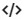

Шаг 1. Создание проекта
Для того что бы создать новый поект, заходм в консоль FireBase и жмем кнопку Create a New Project. Вводим имя нашего проекта и жмем продолжить. После этого откроется страница с настройками GOOGLE Аналитика. Ставим CheckBox "Отключить" и жмем кнопку "Создать проект"
После того как проект создастся, мы увидим боковую панель

В боковой панели выбираем элемент Hosting и справа в центральной части окна жмем кнопку Начать. Откроется инструкция с описанием того, что нужно сделать что бы создать репозиторий на локальном компьютере для работы с хостингом.
Шаг 2. Создание локального репозитория
Создаем папку с произвольным именем, в ней создаем папку с именем public, затем в этой папке создаем еще одну и так же называем ее public. В итоге получится вот такая картина

После этого запускам VS Code из этой директории и открываем консоль. Первое что нам надо сделать, это установить FireBase. Для этого в консоли вводим команду:
npm install -g firebase-tools
Теперь необходимо авторизоваться. Для этого в той же консоли вводим команду:
firebase login
Откроется браузер со страницей выбора учетной записи Google, выбираем учетку и жмем кнопку "Разрешить". После получаем уведомление о том, что все прошло успешно.
Теперь необходимо проинициализировать проект, для этого в терминале вводим команду:
firebase init
Откроется приветственное сообщение FireBase с вопросом "Are you ready to proceed?", вводим Y и жмем Enter. Далее откроется вот такой текст:

Здесь необходимо выбрать роли нашего проекта, пока нам нужен только ХОСТИНГ, поэтому клавишей "стрелкой" перемещаемся в низ до элемента hosting и для того что бы выбрать роль жмем "spase", после чего жмем ENTER
Следующим этапом нам необходимо указать, что это за проект.

Выбираем Use an existing project т.к. в FireBase мы уже создали проект. Жмем Enter и видим что система предложила выбрать проект который уже находится у нас в FireBase

Выбираем его и жмем Enter
Далее система спросит у нас хотим ли мы использовать нашу директорию в качестве public, жмем Enter. После этого система спросит нужно ли генерировать файл index.html? Жмем N и ENTER. После этого появится сообщение о том что инициализация выполнена успешно.
Шаг 3. Загрузка файлов на хостинг
Посе того как проект был проинициализировал, в папке с проектом создаем все необходимы файлы после чего в консоле вводим команду
firebase deploy
Каждый раз когда понадобится запушить данные на сайт вводим эту команду.
Шаг 4. Ссылка
Для того что бы посмотреть какой теперь у нас адрес нашего хостинга, заходим в консоль проекта и так же жмем Hosting. В разделе мы увидим вот такую картину:

Иными словами fireBase нам предоставляет аж две ссылки на наш сайт. Так же мы можем привязать к нашему хостингу пользовательский домен, т.е. можно сделать красивую ссылку.
Шаг 1. Создание проекта
Открываем консоль FireBase и жмем кнопку Создать проект, далее вводим имя проекта и жмем Продолжить. Откроется страница с настройкой аналитики от GOOGLE, отключаем ее и жмем Создать проект
Шаг 2. Регистрация приложения в Firebase
В центре страницы обзора проекта консоли Firebase щелкаем значок Интернета  , чтобы запустить рабочий процесс настройки.

Откроется страница создания веб приложения, вводим название нашего приложения и жмем Зарегистрировать приложение. После этого на этойже странице появится примерно такой контент:
Копируем весь этот код и вставляем в index.html файл своего проекта.
Помимо этого кода, необходимо скопировать SDN скрипта JS для работы с БД от FireBase, выглядит она вот так:
В итоге наш HTML файл выглядит пока вот так:

Шаг 3. Создание базы данных
Возвращаемся в консоль FireBase и в боковой панели выбираем пункт Realtime Database, откроется раздел базы данных, на главной странице жмем кнопку Создать базу данных
Откроется модально окно с выбором режима БД
Выбираем вариант с тестовым режимом, так как в этом случае не нужно будет настраивать аутентификацию и всем будет доступны функции записи и чтения данных из БД. Жмем кнопку Включить, после чего появится структура нашей БД
Шаг 4. Получение ссылки на базу данных
В нашем html документе в разделе script необходимо добавить вот такую строчку
Здесь мы создаем переменную database куда помещаем нашу базу данных
Шаг 5. Добавление данных в нашу БД
Для добавления данных в нашу бд используется метод set(), выглядит это все вот так:
Входным параметром для метода set может к примеру быть массив, в качестве элементов которого могут быть объекты. Например можно это записать так:
Теперь после выполнения такого кода, если вернуться в консоль FireBase и посмотреть как теперь будет выглядеть наша структура БД, то мы увидим вот такую картину:

Теперь необходимо разобраться с тем, что делает метод ref(). БД FireBase хранится в формате JSON, а это значит что структура данных представлена в виде дерева, которое может иметь вложенность (как указано в документации FireBase вложенность может достигать 32 уровней).Метод ref() позволяет нам указывать в какой рездел дерева мы помещаем наши данные
В примере мы методу ref() на вход задали такие параметры: 'users/' + userId, что можно прочитать так: У корневого элемента БД мы создаем ветвь users, затем слеш говорит о том, что в этом разделе мы создаем подраздел, которому задаем имя как - значение переменной userId. Эту переменную мы определили ранее и задали ей значение = 1
Шаг 6. Как слушать события
Рассмотрим следующий код:
Начало нам уже знакомо, создаем ссылку к БД, затем, используя метод set, добавляем в нашу БД 4 записи. После этого мы создаем переменную, куда помещаем путь до нашей ветви, которую мы будем слушать (отлавливать события). Далее к этой переменной мы применяем метод on, этот метод и отслушивает все собития (добавление записей). Этот метод принимает в себя два параметра, первый это какое событие, мы указываем 'value', т.е изменение значения. Второй параметр это callBack функция, которая принимает такой входной параметр как snapshot. snapshot - это снимок данных которые мы можем вывести в консоль, вызвав у этого объекта метод val(). В итоге в консоли мы увидим вот такой результат: